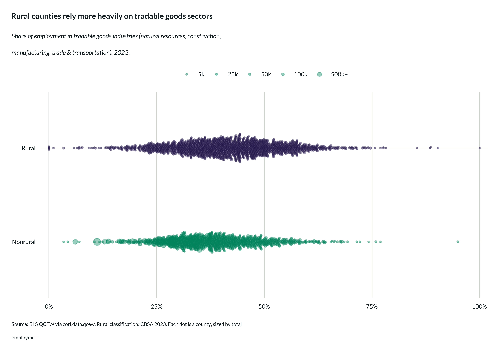
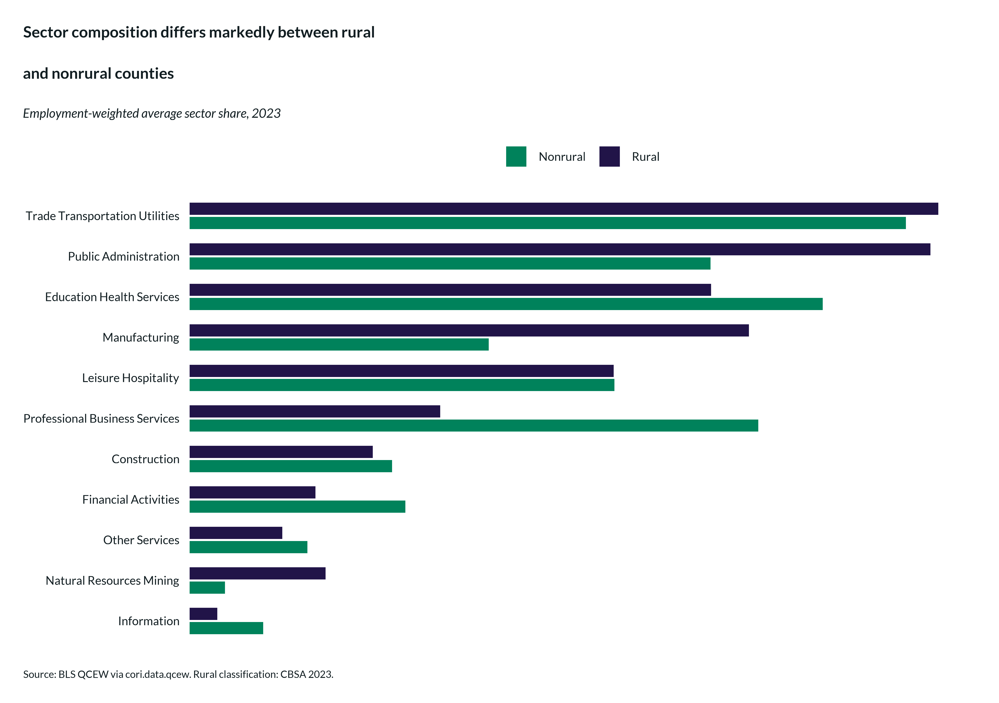

Sector Analysis: How Rural Economies Differ
sector-analysis.Rmd
library(cori.data.qcew)
library(ruraldefinitions)
library(cori.charts)
library(dplyr)
library(ggplot2)
library(ggbeeswarm)
library(scales)
library(stringr)
load_fonts()
update_cori_geom_defaults()Not all employment is equal. A county where most workers are in healthcare and local retail faces very different economic dynamics than one anchored in manufacturing or professional services. Sector composition shapes everything from wage levels to resilience against downturns to sensitivity to remote work.
cori.data.qcew offers two ways to investigate employment
by sector:
- BLS supersectors — the 11 standard industry groupings published by the Bureau of Labor Statistics (natural resources, construction, manufacturing, etc.)
- CORI super-sectors — a CORI-designed aggregation into 3 categories based on whether industries primarily face local or national/global demand
CORI supersectors
CORI’s classification, loosely derived from Eckert (2018), groups BLS supersectors into three supersectors:
| CORI Supersector | Constituent BLS supersectors |
|---|---|
| Tradable Goods | Natural resources & mining, Construction, Manufacturing, Trade/transportation/utilities |
| Tradable Services | Information, Financial activities, Professional & business services |
| Local Services | Education & health services, Leisure & hospitality, Other services, Public administration |
Industries in the tradable categories compete in national or global markets. Their presence in a rural county often signals competitive advantage — something the local area does well enough that the wider market wants it. Local services, by contrast, exist everywhere and primarily reflect local demand.
Pulling sector data
# CORI super-sector employment shares, county level
sector_emp <- get_sector_employment(
geography = "county",
years = 2023,
sector_type = "CORI",
value_type = "share"
)
# Add rural classification
rural <- cbsa_2023 |> select(geoid, is_rural)
sector_emp <- sector_emp |>
left_join(rural, by = "geoid") |>
filter(!is.na(is_rural))
# Total employment for sizing points
total_emp <- get_employment(geography = "county", years = 2023) |>
filter(variable == "employment") |>
select(geoid, total_employment = value)Swarm plot: tradable goods share by rural status
A swarm plot shows the full distribution across counties — not just the average. Each dot is a county, sized by employment.
swarm_data <- sector_emp |>
filter(variable == "emp_share", sector == "tradable_goods") |>
left_join(total_emp, by = "geoid") |>
filter(!is.na(total_employment), total_employment > 0)
title_swarm <- "Rural counties rely more heavily on tradable goods sectors"
subtitle_swarm <- str_wrap(
"Share of employment in tradable goods industries (natural resources, construction, manufacturing, trade & transportation), 2023.",
width = 95
)
fig_swarm <- swarm_data |>
ggplot(aes(
x = value,
y = is_rural,
size = total_employment,
color = is_rural
)) +
geom_beeswarm(cex = 0.4, groupOnX = FALSE, alpha = 0.4) +
scale_color_cori(palette = "ctg2ruralnonrural", guide = "none") +
scale_size_continuous(
range = c(0.5, 5),
breaks = c(5e3, 25e3, 50e3, 100e3, 500e3),
labels = c("5k", "25k", "50k", "100k", "500k+"),,
name = "Total employment"
) +
scale_x_continuous(
labels = label_percent(accuracy = 1),
expand = expansion(mult = c(0.02, 0.02))
) +
scale_y_discrete(limits = rev(c("Rural", "Nonrural"))) +
coord_cartesian(clip = "off") +
theme_cori() +
theme(
panel.grid.major = element_blank(),
panel.grid.major.x = element_line(color = "#d0d2ce", linewidth = 0.5)
) +
labs(
title = title_swarm,
subtitle = subtitle_swarm,
caption = str_wrap(
"Source: BLS QCEW via cori.data.qcew. Rural classification: CBSA 2023.\n Each dot is a county, sized by total employment.",
width = 110
),
x = NULL,
y = NULL
)
if (dir.exists(here::here("export"))) {
save_plot(fig_swarm, here::here("export/sector_swarm.png"))
}
fig_swarm
BLS supersector breakdown
For a more granular view, the 11 BLS supersectors show where employment is concentrated across the full distribution of industry types:
bls_sector <- get_sector_employment(
geography = "county",
years = 2023,
sector_type = "BLS",
value_type = "share"
) |>
left_join(rural, by = "geoid") |>
filter(!is.na(is_rural), variable == "emp_share") |>
select(geoid, sector, is_rural, emp_share = value)
# Average share by sector and rural status
bls_avg <- bls_sector |>
left_join(total_emp, by = "geoid") |>
group_by(sector, is_rural) |>
summarize(
avg_share = weighted.mean(emp_share, total_employment, na.rm = TRUE),
.groups = "drop"
)
fig_bls <- bls_avg |>
ggplot(aes(
x = avg_share,
y = reorder(sector, avg_share),
fill = is_rural
)) +
geom_col(position = position_dodge(width = 0.7), width = 0.6) +
scale_fill_cori(palette = "ctg2ruralnonrural") +
scale_x_continuous(
labels = label_percent(accuracy = 1),
expand = expansion(mult = c(0, 0.05))
) +
scale_y_discrete(
labels = \(x) str_to_title(str_replace_all(x, "_", " "))
) +
theme_cori_horizontal_bars() +
labs(
title = "Sector composition differs markedly between rural\nand nonrural counties",
subtitle = "Employment-weighted average sector share, 2023",
caption = str_wrap(
"Source: BLS QCEW via cori.data.qcew. Rural classification: CBSA 2023.",
width = 100
),
fill = NULL,
x = NULL,
y = NULL
)
if (dir.exists(here::here("export"))) {
save_plot(fig_bls, here::here("export/bls_sector_bars.png"))
}
fig_bls
Sector wages
Pay varies substantially across sectors. Use
get_sector_wages() to see which sectors drive higher or
lower wage outcomes:
sector_wages <- get_sector_wages(
geography = "county",
years = 2023,
sector_type = "CORI"
) |>
left_join(rural, by = "geoid") |>
filter(!is.na(is_rural)) |>
left_join(total_emp, by = "geoid") |>
select(geoid, sector, is_rural, agg_var, avg_pay = value)
# Employment-weighted average wage by sector and rural status
wage_summary <- sector_wages |>
group_by(sector, is_rural) |>
summarize(
avg_wage = weighted.mean(avg_pay, agg_var, na.rm = TRUE),
.groups = "drop"
)What sector analysis reveals
Rural economies are disproportionately concentrated in tradable goods sectors — natural resources, manufacturing, construction, and trade — relative to nonrural counties. These industries bring outside dollars into local economies and have long anchored middle-income employment in places without large metro labor markets. Their presence signals genuine competitive advantage: something the local area does well enough that the wider market wants it.
The share of rural employment in tradable services — professional services, finance, information — has historically been lower than in nonrural counties, but this gap has been narrowing. Remote work and the geographic dispersal of knowledge-economy jobs that accelerated after 2020 show up in this data: counties that had little professional services employment a decade ago have seen measurable gains. Which rural counties are capturing that growth, and in which industries, is one of the more tractable questions this data can help answer.
Wages tell a complementary story. The rural wage penalty is real but uneven across sectors — some rural tradable goods employers pay competitively with their nonrural peers, while the gap in tradable services remains wider. Sector composition is one of the most informative single lenses for understanding why rural economic outcomes vary so much from county to county, and where the opportunities for growth are emerging.
Data sources
The Center on Rural Innovation’s curation of U.S. Bureau of Labor Statistics, Quarterly Census of Employment and Wages. https://www.bls.gov/cew/
The Center on Rural Innovation’s curation of U.S. Census Bureau, Metropolitan and Micropolitan Statistical Areas (OMB delineations). https://www.census.gov/programs-surveys/metro-micro.html
This product uses the Census Bureau Data API but is not endorsed or certified by the Census Bureau. BLS.gov cannot vouch for the data or analyses derived from these data after the data have been retrieved from BLS.gov.
The CORI supersector classification is loosely derived from Eckert (2018). The BLS supersector definitions follow standard NAICS-based industry groupings published by the Bureau of Labor Statistics.